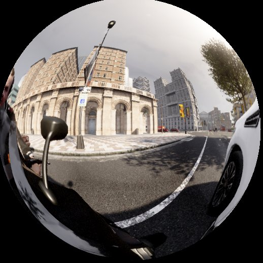
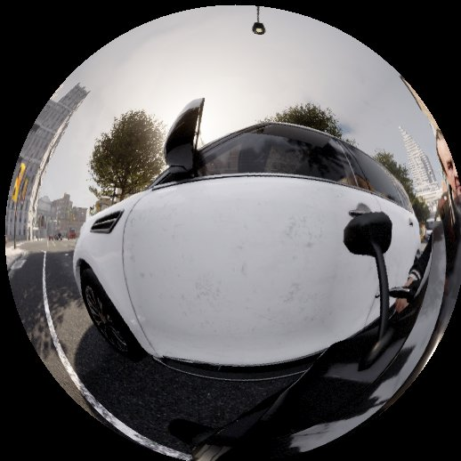
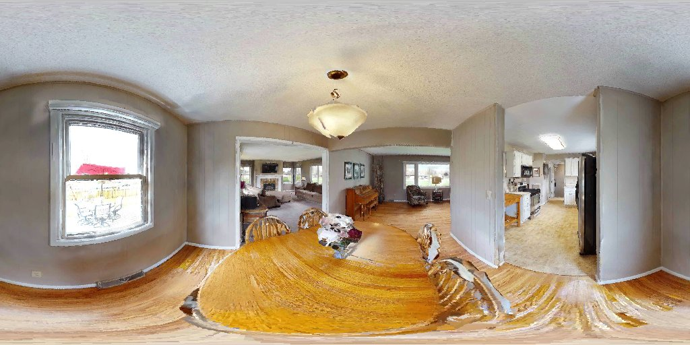
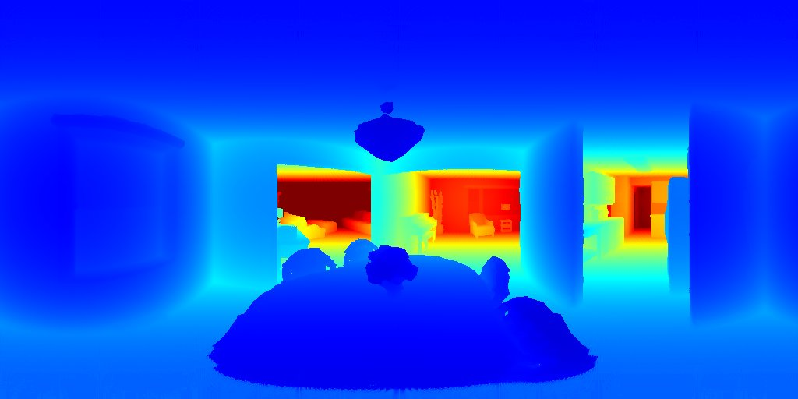

Equine-Inspired Vision System: Partially Self-supervised 360° Stereo Panoramic Depth Estimation
Han Yu, Jianfeng Li, Shigang Li
Asian Conference on Computer Vision (ACCV) 2026 · Project HorseVision (马眼视觉)
Overview
Like a horse, whose laterally placed eyes see almost all the way around with a small binocular overlap in front, HorseVision uses a back-to-back dual-fisheye camera to estimate 360° panoramic depth. The two fisheye views are predicted independently by a shared Depth-Anything-V2 encoder, fused into an equirectangular panorama by geometric splatting, and refined by a lightweight ViT (MiniDA3).
Self-supervision comes from the overlapping field of view between the two lenses: each view is warped into the other using the predicted depth, and the photometric agreement yields a per-pixel confidence map.
Inputs and outputs




At a glance
| Input | 2 × fisheye RGB (518 × 518) |
|---|---|
| Output | Panoramic depth (518 × 1036), per-view fisheye depth, confidence maps |
| Peak GPU memory | 1.14 GB |
| End-to-end runtime | 3.9 s including model loading (RTX 4090) |
| Scenes | Indoor (max 20 m, Structured3D / HM3D) · Outdoor (max 80 m, CARLA) |
Quick start
git clone https://github.com/koshokai/HorseVision.git cd HorseVision git clone https://github.com/DepthAnything/Depth-Anything-V2.git python download_models.py --scene outdoor python test_single_conf.py
See the README for requirements, model zoo and configuration.
Citation
@inproceedings{horsevision,
title = {Equine-Inspired Vision System: Partially Self-supervised 360{\textdegree} Stereo Panoramic Depth Estimation},
author = {Yu, Han and Li, Jianfeng and Li, Shigang},
booktitle = {Proceedings of the Asian Conference on Computer Vision (ACCV)},
series = {Lecture Notes in Computer Science},
publisher = {Springer},
year = {2026}
}